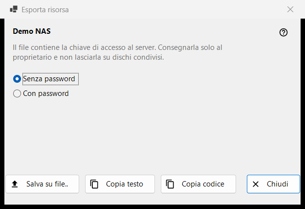
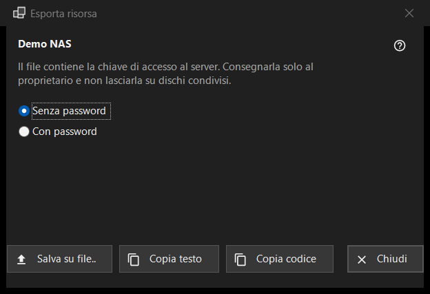

Esporta risorsa
Scopo
Prepara le impostazioni di un server SFTP in modo che un altro computer o un telefono possa importarle. Si apre da «Esporta..» nel menu «Altro» dell'elenco delle risorse e richiede una risorsa selezionata; una cartella condivisa da Share Manager si esporta invece da Share Manager.


In questo ordine
- Leggi l'avviso sotto il nome della risorsa.
- Scegli «Senza password» (predefinito) o «Con password».
- Premi «Salva su file..», oppure copia le impostazioni come testo o come codice breve.
- Consegna il risultato solo al suo proprietario.
Gli elementi
L'avviso
La riga sotto il nome dice che il file contiene la chiave di accesso al server: consegnalo solo al suo proprietario e non lasciarlo mai su dischi condivisi. Vale per il file, per il testo copiato e per il codice.
Senza o con la password
«Senza password» è selezionato all'inizio. «Con password» è attivo solo quando la password salvata si può rileggere; altrimenti compare il suggerimento «La password non è salvata - il file sarà senza password.». La password viene decifrata in memoria per l'esportazione e non va da nessun'altra parte.
Salva, copia testo, copia codice
«Salva su file..» scrive un file .fmscfg tramite una finestra di salvataggio; chi scrive rifiuta i dischi FAT o exFAT, i dischi di rete e le cartelle che altri utenti possono modificare, e non lascia mai un file scritto a metà. «Copia testo» mette il documento delle impostazioni negli appunti e «Copia codice» un codice breve con lo stesso contenuto. Entrambi vengono copiati con i marcatori di riservatezza (niente cronologia degli appunti, niente sincronizzazione cloud). La riga di stato mostra il risultato.
Che cosa si può esportare
Solo un server SFTP di cui il programma ricorda già la chiave. La finestra si apre in ogni caso e un rifiuto compare nella riga di stato quando premi un pulsante: una cartella di rete (SMB) non può essere descritta da questo file; la chiave del server non è ricordata (apri la risorsa una volta e conferma la chiave); la risorsa non ha un indirizzo da consegnare; la cartella è scritta in un modo che il file non accetta (correggila con «Modifica..»).